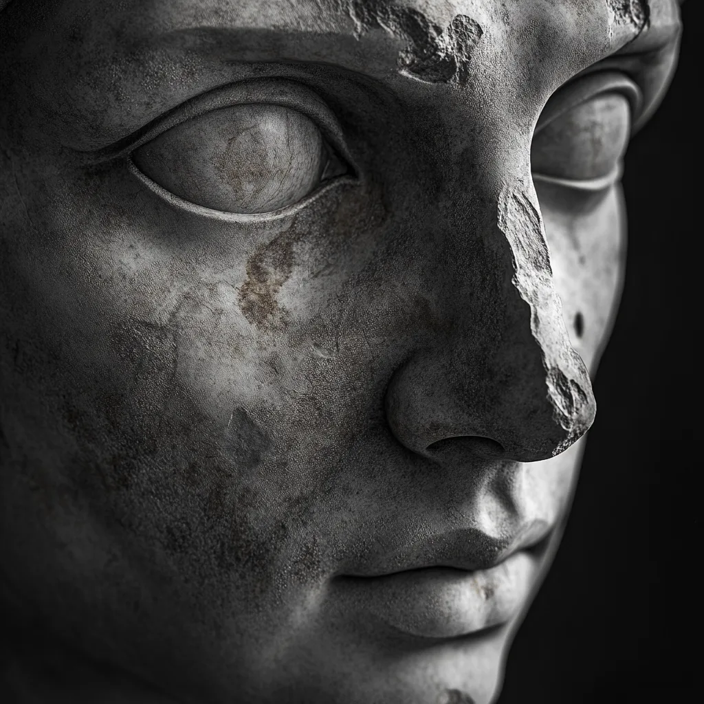
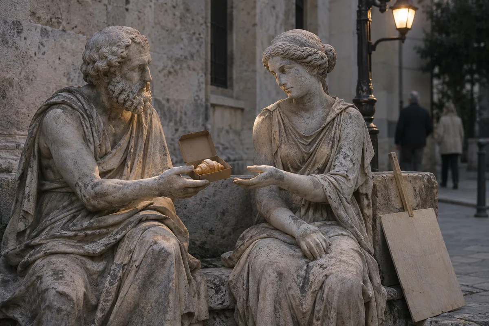
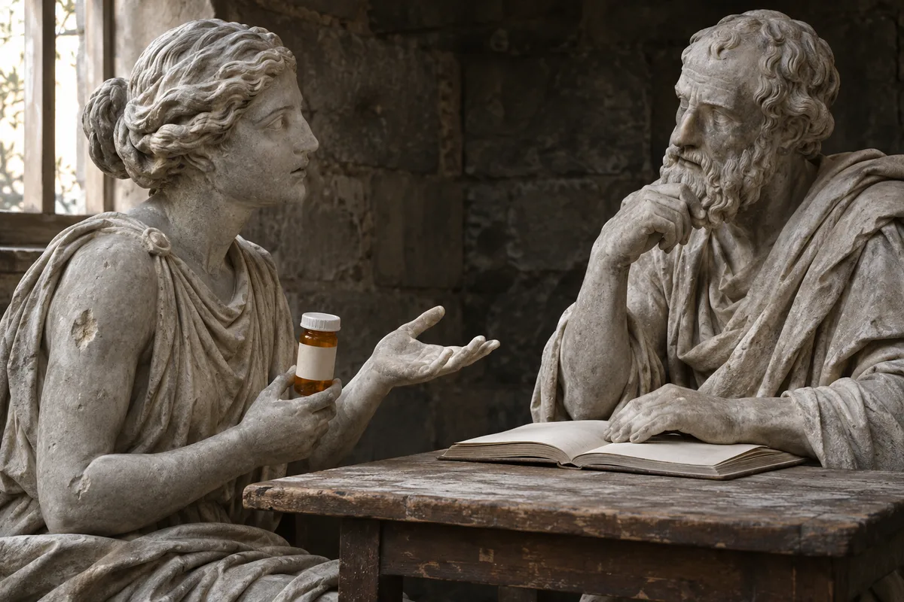
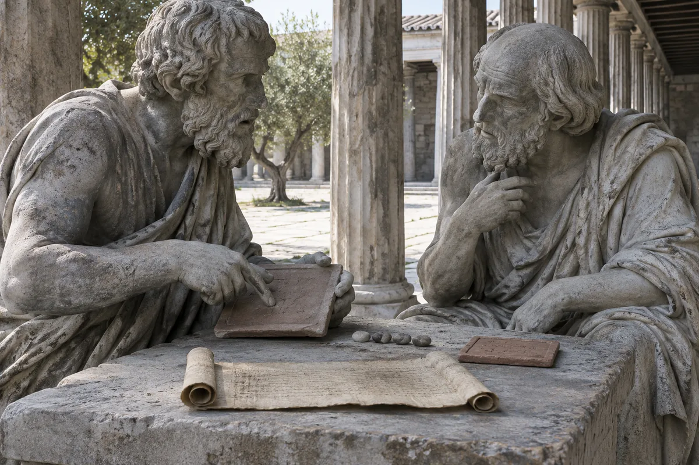
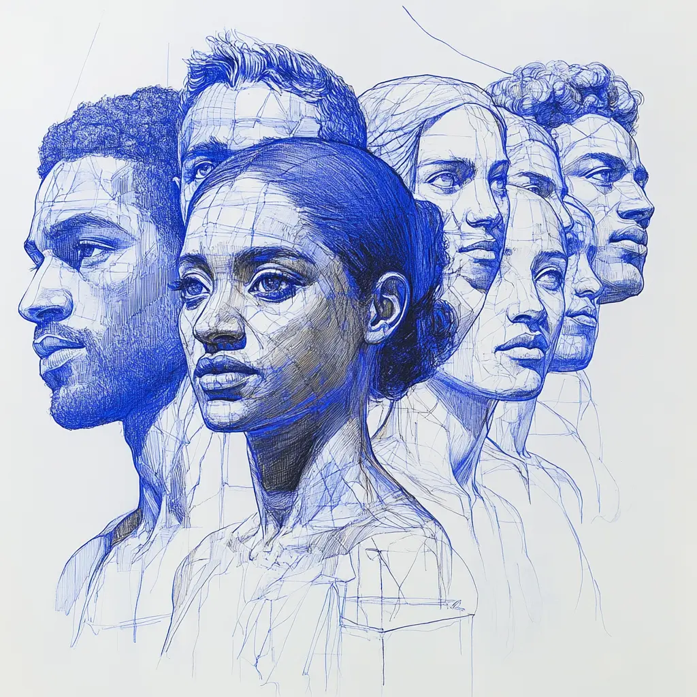
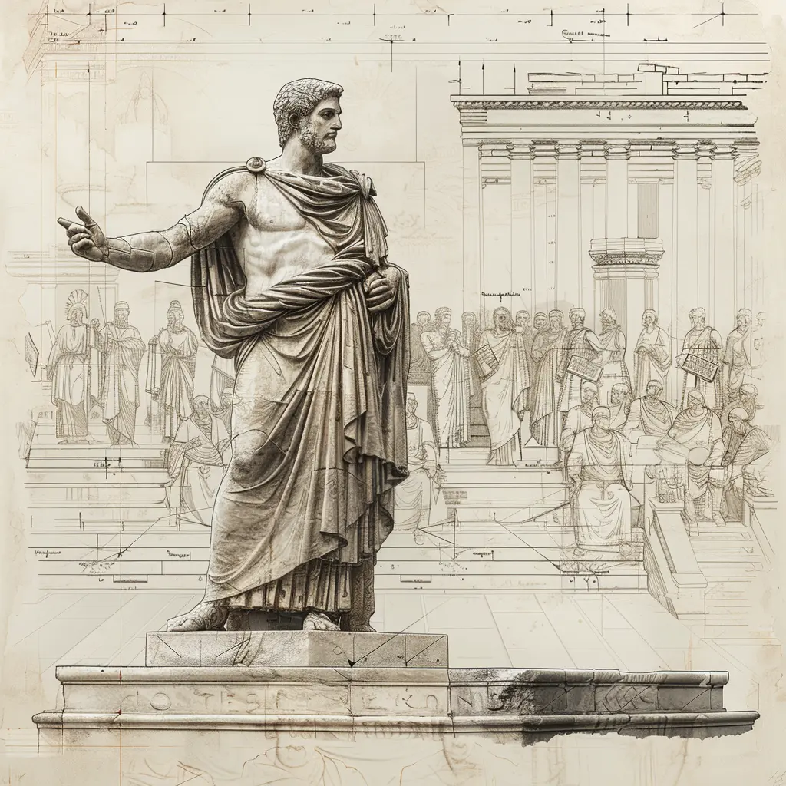

9takes · Image review · November 4, 2026
Weathered statues, recognizable situations
157 distinct hero images across 159 published non-profile posts. 11 replacements are
connected locally. Your latest 7 revisions appear first; the other proposed changes remain
queued.
Visual triage uses the original contact sheets. Replacements use article bodies and your
feedback; other proposed scenes use titles and descriptions and need a body check before
generation. Production is not deployed.
43 · T1 Recreate46 · T2 Refine or reframe37 · T3 Retain31 · E Separate editorial system11 replaced locally
Style and scene guide Exact generation prompts Hero inventory All blog asset usage
Style references

greek_distorted_statue_face.webp
greek-statue-reading-a-book.webp
greek-statue-reading.webp
Latest revisions · 7 images
Be Gentle When You're Right
greek-statue-offering-mercy-under-streetlamp
Your note: Needs updating.
Before

New · greek-statues-gentle-disagreement-v2
A quiet exchange between two statues at equal eye level: an offered pastry and a lowered
sign, preserving the article’s concrete act of kindness.
How Your Enneagram Type Shapes Your Relationship with Medication
medications_and_stress
Your note: Needs updating.
Before

New · greek-statues-medication-conversation-v2
One patient statue discusses a concern with a listening clinician; one closed unbranded
bottle makes the subject clear.
Neurodiversity vs. Personality: Stop Looking for Labels, Start Looking Inward
brain-vs-heart-dichotomy
Your note: Needs updating.
Before
New · greek-statue-self-reflection-v2
An intact statue studies its reflection in still water, connecting to the article’s
invitation to understand personal patterns.
The Crash Course on Emotions We All Missed in Kindergarten
emotions-crash-course-kindergarten
Your note: Loves the chalkboard with the word emotion and the
kindergarten learning idea; add more Greek aesthetic.
Before
New · emotions-greek-classroom-v2
Keep EMOTIONS large on the board and the wooden alphabet blocks. Add worn Greek stonework,
a small secondary bust and simple chalk faces.
3 Societal Ticking Time Bombs Nobody Is Connecting
empty-room
Your note: Likes the idea; iterate and improve it.
Preserve an unoccupied room and an empty central chair, with fewer meaningful objects,
worn Greek stonework and restrained dawn light.
Enneagram vs Myers-Briggs: Which Actually Explains You Better?
enneagram-vs-meyers-briggs
Your note: Needs Greek statues and an ancient Greece time period.
Before

New · greek-statues-personality-frameworks-v2
Two philosophers consider complementary approaches in an ancient Greek academy, using
period tablets and papyrus; no modern objects.
Philosophy and Psychology Gave Birth to the Enneagram
freud-plato
Your note: Likes the image; make the colors more cohesive.
Keep the opposing profiles, expressions, glasses and sculptural detail; unify the light
and neutral grey stone palette.
Earlier replacements · 4 images
Why Your Team Keeps Having the Same Ideas (Enneagram Fix)
people-from-diverse-backgrounds

Before
New · greek-statues-different-perspectives-v2
Three statues approach the same work problem differently: propose, examine, listen.
Enneagram Careers: Find the Working Conditions That Fit You
female-greek-statues-of-different-professions
Before
New · greek-statues-career-working-conditions-v2
Show solitary ledger work and client-facing work in the same profession.
Why Your Enneagram Clients Aren't Changing (And the Homework That Actually Works)
greek-statue-giving-a-speech

Before
New · greek-statue-practicing-imperfect-action-v2
A statue practices noticing an imperfection without correcting it.
Enneagram Instinctual Subtypes: Why You Don't Fully Match Your Type
neoclassical-fortress2
One courtyard: personal resources, attention to the wider group, and close one-to-one
connection.
Ranked inventory
T1: recreate major mismatches. T2: preserve a useful idea and refine its treatment or
framing. T3: retain for now. E: identifiable people and type dossiers serve a different
editorial purpose. Cards show the original audited image; replaced cards link to the new
artwork.
All T1 · Recreate T2 · Refine or reframe T3 · Retain
E · Separate editorial system Find image or post
157 images
T1 · Recreate Replaced locally
brain-vs-heart-dichotomy
Assessment: User moved this from retain to recreate. The split face
and exposed circuit pattern are an artificial sci-fi metaphor.
New scene: An intact statue studies its reflection in still water,
connecting to the article’s invitation to understand personal patterns.
View replacement ·
Article source
T1 · Recreate Replaced locally
enneagram-vs-meyers-briggs
Assessment: User explicitly requests ancient Greece and Greek statues
in place of the modern street crowd.
New scene: Two philosophers consider complementary approaches in an
ancient Greek academy, using period tablets and papyrus; no modern objects.
View replacement ·
Article source
T1 · Recreate Replaced locally
female-greek-statues-of-different-professions
Assessment: User-flagged. Job costumes, microphones and glowing
diagrams misrepresent a post about working conditions.
New scene: Show solitary ledger work and client-facing work in the
same profession.
View replacement
·
Article source
T1 · Recreate Replaced locally
greek-statue-giving-a-speech
Assessment: User-flagged. Pale line drawing and speech scene miss the
practical homework theme.
New scene: A statue practices noticing an imperfection without
correcting it.
View replacement
· Article source
T1 · Recreate Replaced locally
greek-statue-offering-mercy-under-streetlamp
Assessment: User moved this from retain to recreate. The rigid crowd,
tiny phones and glowing gift staging feel too synthetic.
New scene: A quiet exchange between two statues at equal eye level:
an offered pastry and a lowered sign, preserving the article’s concrete act of
kindness.
View replacement
·
Article source
T1 · Recreate Replaced locally
medications_and_stress
Assessment: User moved this from retain to recreate. The bottle wall,
illegible labels and blurred glossy figure overwhelm the human concern.
New scene: One patient statue discusses a concern with a listening
clinician; one closed unbranded bottle makes the subject clear.
View replacement ·
Article source
T1 · Recreate Replaced locally
neoclassical-fortress2
Assessment: User-flagged. Saturated fantasy fortress has no clear
relationship to the three instincts.
New scene: One courtyard: personal resources, attention to the wider
group, and close one-to-one connection.
View replacement ·
Article source
T1 · Recreate Replaced locally
people-from-diverse-backgrounds
Assessment: User-flagged. Blue ink portrait collage shows demographic
variety without a shared situation.
New scene: Three statues approach the same work problem differently:
propose, examine, listen.
View replacement
· Article source
T1 · Recreate Queued
attachment_styles_enneagram_types_psychology
Assessment: Neon ribbons and a nine-panel collage dominate the human
relationship.
Proposed scene: Two statues on a bench: one reaches for closeness
while the other turns away; leave a visible gap.
T1 · Recreate Queued
circle_of_nine_greek_greek_statues_sitting
Assessment: Glowing bodies and reflective fantasy water replace a
readable social situation.
Proposed scene: Three statues at a gathering: one steps forward, one
joins a task, one observes from the edge.
T1 · Recreate Queued
enneagram-addiction-recovery
Assessment: Flying gold chain fragments make addiction recovery look
like a fantasy poster.
Proposed scene: A statue pauses before reaching for a familiar cup; a
trusted companion waits nearby.
T1 · Recreate Queued
enneagram-concepts
Assessment: Blue technical collage and scattered symbols conflict
with the photographic references.
Proposed scene: A statue notices that the doorway of its stone
enclosure is already open.
T1 · Recreate Queued
faces-of-depression
Assessment: Moss-covered duplicate heads, gold light and mirrored
arrangement overwhelm the subject.
Proposed scene: A worn statue sits beside an unfinished everyday
task, with a companion available nearby.
T1 · Recreate Queued
faq-2
Assessment: Floating neon question marks and electric blue lighting
are far outside the references.
Proposed scene: An inquisitive statue leans toward a seated teacher
over one open book.
T1 · Recreate Queued
giving-a-speech
Assessment: Drafting lines and a heroic speech depict preaching,
while the post argues for restraint.
Proposed scene: A statue lowers its raised hand and listens to a
companion instead of lecturing.
T1 · Recreate Queued
greek_statues_in_a_circle_holding_hands
Assessment: Luminous purple network ring and aerial crowd are
abstract and synthetic.
Proposed scene: Two statues fit different pieces into one shared
structure, with a visible need to cooperate.
T1 · Recreate Queued
greek-mind
Assessment: Blue drafting overlays and diagrammed bust repeat the old
illustration language.
Proposed scene: A statue studies its reflection while a second
observer watches from another angle.
T1 · Recreate Queued
greek-sculpture-on-a-laptop
Assessment: Blue ink and graph-paper background are incompatible with
physical stone photography.
Proposed scene: A statue pauses before copying nearby identical
gestures at a shared writing table.
T1 · Recreate Queued
greek-statue-2-sided-mask
Assessment: Theatrical split mask, artificial grin and colored gels
sensationalize mental illness.
Proposed scene: A worn statue quietly describes a difficult
experience to an attentive companion.
T1 · Recreate Queued
greek-statue-adhd-scattered-thoughts
Assessment: Floating icons and exploding head effects turn ADHD into
decorative visual noise.
Proposed scene: A statue tries to finish one task while several
unfinished tasks compete on a small desk.
T1 · Recreate Queued
greek-statue-babies
Assessment: Glowing butterflies, sci-fi setting and toy-like figures
dominate the parenting topic.
Proposed scene: A small child statue explores a simple object while a
parent responds at the child’s height.
T1 · Recreate Queued
greek-statue-comparing-enneagram-tests
Assessment: Glowing tablet and fantasy blue/gold light make comparing
tests look magical.
Proposed scene: A statue compares two paper questionnaires beside one
plain notebook, naturally lit.
T1 · Recreate Queued
greek-statue-flex
Assessment: Electric cyan/red nightclub lighting overwhelms the
boasting behavior.
Proposed scene: One statue subtly displays a prize while a
companion’s attention is elsewhere.
T1 · Recreate Queued
greek-statue-introducing-9takes
Assessment: Blue architectural illustration and public orator miss
the answer-first product behavior.
Proposed scene: Two statues independently write before turning their
papers toward each other.
T1 · Recreate Queued
greek-statue-overthinking-spiral
Assessment: Decorative clocks, spirals and gold/blue ornament replace
a concrete thought loop.
Proposed scene: A statue rereads the same short note at a table late
at night; discarded drafts remain nearby.
T1 · Recreate Queued
greek-statue-playing-with-toys
Assessment: Bright toy clutter and multicolor lighting reduce
neurodivergence to a stereotype.
Proposed scene: A statue protects concentration at a quiet desk while
a distracting gathering remains behind it.
T1 · Recreate Queued
greek-statue-stress-paradox
Assessment: Cosmic swirl and repeated light trails turn stress into
fantasy spectacle.
Proposed scene: A statue reacts the same way to two ordinary
interruptions; show one clear reaction in the hero.
T1 · Recreate Queued
greek-statue-taking-notes
Assessment: Red/cyan lighting overwhelms a generic note-taking pose.
Proposed scene: A statue quietly observes a new arrival before
starting a conversation.
T1 · Recreate Queued
greek-statues-at-the-beach
Assessment: Candy colors, sunglasses and a packed beach look like a
novelty AI postcard.
Proposed scene: One statue rests at a quiet rough-stone shore while
another chooses a gentle walk.
T1 · Recreate Queued
greek-statues-party-vibes
Assessment: Neon pink/blue club and heroic pose overwhelm the
observation of social styles.
Proposed scene: At a small gathering, one statue helps, one starts a
conversation, and one observes at the edge.
T1 · Recreate Queued
greek-statues-walking-past-a-pothole
Assessment: Magenta/cyan rain and glowing street overwhelm an
otherwise useful pothole metaphor.
Proposed scene: Two statues pause at the same broken paving stone and
choose a different route together.
T1 · Recreate Queued
greeks-debating-human-nature
Assessment: Sepia architectural line drawing belongs to the old
visual system.
Proposed scene: Three statues debate around one simple object, with
thought, feeling and action evident in posture.
T1 · Recreate Queued
husband-and-wife-arguing
Assessment: Drafting-grid illustration and pale blue panels break the
photographic direction.
Proposed scene: Two statues at a domestic table pause during a
familiar disagreement and turn toward a book.
T1 · Recreate Queued
male_and_female_greek_statues
Assessment: Purple/blue club lighting and decorative armor create a
toy-like fantasy scene.
Proposed scene: A physically strong statue listens without dominating
a quiet face-to-face conversation.
T1 · Recreate Queued
neoclassical-metropolis
Assessment: Pale illustrated city and blue sky lack both gritty
material and questioning people.
Proposed scene: Small groups of weathered statues asking and
considering questions in a real-feeling agora.
T1 · Recreate Queued
psychology-of-public-shame
Assessment: Floating screens, engraved claims and theatrical arena
make public shame overly schematic.
Proposed scene: A statue stands exposed while several observers turn
their attention and pointing hands toward it.
T1 · Recreate Queued
reddit-late-at-night
Assessment: Blue architectural linework and glowing laptop repeat the
old illustrated style.
Proposed scene: A statue scrolls alone at a desk while an empty
nearby chair suggests missing connection.
T1 · Recreate Queued
reddit-mod-psychology
Assessment: Green/red cyberpunk light and dense glowing interfaces
read as a gaming render.
Proposed scene: A tired statue carefully sorts a small set of papers
at a desk while a group waits outside.
T1 · Recreate Queued
stairs-of-self-improvement
Assessment: Heavenly stair tunnel and cloud spectacle substitute
generic transcendence for growth.
Proposed scene: Two statues face the same step but use different
practical approaches.
T1 · Recreate Queued
twitter-toxic-psychology
Assessment: Red/blue crowd, floating speech bubbles and broken stage
create cartoon spectacle.
Proposed scene: A restrained scene of a small public pile-on, with
one statue reconsidering before joining.
T1 · Recreate Queued
twitter-x-toxic-arena-battle
Assessment: Platform icons, speech bubbles and colored arena lighting
make a busy infographic.
Proposed scene: Two statues escalate an argument while observers
repeat the gesture; no logos or floating symbols.
T1 · Recreate Queued
two_greek_statues_with_wings
Assessment: Purple stage light and literal wings look like fantasy
character art.
Proposed scene: A central weathered statue turns toward one of two
adjacent companions; keep the relational idea simple.
T1 · Recreate Queued
two-greek-statues-having-a-serious-conversation
Assessment: Neon magenta/cyan close-up is precisely the color drift
the user rejects.
Proposed scene: Two worn statues sit close in a difficult but
attentive conversation under one natural light.
T2 · Refine or reframe Replaced locally
emotions-crash-course-kindergarten
Assessment: User explicitly loves the chalkboard, word and
kindergarten concept. Retain those; add Greek architectural and material details.
New scene: Keep EMOTIONS large on the board and the wooden alphabet
blocks. Add worn Greek stonework, a small secondary bust and simple chalk faces.
View replacement
·
Article source
T2 · Refine or reframe Replaced locally
empty-room
Assessment: User likes the empty-room concept. Keep the absence of
people; reduce duplicate screens, implausible cables and saturated lighting.
New scene: Preserve an unoccupied room and an empty central chair,
with fewer meaningful objects, worn Greek stonework and restrained dawn light.
View replacement ·
Article source
T2 · Refine or reframe Replaced locally
freud-plato
Assessment: User likes the opposing portrait composition. The change
is to the red/cyan palette, not to the underlying scene.
New scene: Keep the opposing profiles, expressions, glasses and
sculptural detail; unify the light and neutral grey stone palette.
View replacement ·
Article source
T2 · Refine or reframe Queued
8s-playing-chess
Assessment: Ornate casino-like setting and gilded surfaces distract
from the Type 8 story.
Proposed scene: Two worn statues studying a chess position; one
accepts the other’s offered move.
T2 · Refine or reframe Queued
alone-with-thoughts
Assessment: Quiet action works; pastel sky and smooth painted ruins
soften the material.
Proposed scene: Keep solitude by the water; replace the pastel
setting with weathered stone and restrained daylight.
T2 · Refine or reframe Queued
crisis-management
Assessment: Radial blur, blue cast and crowded action make the help
being offered unclear.
Proposed scene: One seated overwhelmed statue with one calm companion
at eye level; simplify the setting.
T2 · Refine or reframe Queued
diverse-leaders-boardroom-enneagram
Assessment: Glossy corporate boardroom and tiny crowd make the scene
feel like stock CGI.
Proposed scene: One leader listens while a colleague points out a
problem on a shared plan.
T2 · Refine or reframe Queued
enneagram-trauma-response
Assessment: Gold-filled fractures are a familiar AI metaphor; there
is no lived situation.
Proposed scene: A braced statue gradually opens a guarded posture
beside a patient companion; no broken-body shorthand.
T2 · Refine or reframe Queued
female-greek-statue-on-a-date
Assessment: Dating situation is useful, but the foreground figure
reads as a living woman in costume.
Proposed scene: Keep the listening posture; make both figures visibly
carved and weathered marble.
T2 · Refine or reframe Queued
female-greek-statue-reading-about-self-development
Assessment: Useful reading action, but the smooth face and hair look
like a porcelain figurine.
Proposed scene: Keep the café reader; introduce believable stone
wear, shadow and less polished surfaces.
T2 · Refine or reframe Queued
gandalf-statue
Assessment: Stone and shadows work, but the fantasy wizard is a loose
match for practical self-efficacy.
Proposed scene: A statue completes a modest first task while a larger
unfinished task waits nearby.
T2 · Refine or reframe Queued
greek_statues_giving_and_receiving_love_in_different_ways
Assessment: Grand sunny garden tableau feels ornate; gestures are too
small at thumbnail size.
Proposed scene: Two statues: one offers practical help while the
other invites a conversation.
T2 · Refine or reframe Queued
greek-council-disagreeing
Assessment: Useful debate concept, but saturated blue background and
posed council need grounding.
Proposed scene: Three researchers inspect the same evidence with
distinct reactions under neutral side light.
T2 · Refine or reframe Queued
greek-dude-reading-book
Assessment: Reading pose works; polished green surface and generic
book are less distinctive.
Proposed scene: Keep the reader; emphasize weathered grey stone and a
moment of self-recognition.
T2 · Refine or reframe Queued
greek-statue-fighting-depression
Assessment: Human presence is clear but shattered-rock emergence and
god rays feel like a fantasy poster.
Proposed scene: A statue takes one small step out of a dark room with
ordinary daylight beyond.
T2 · Refine or reframe Queued
greek-statue-finding-enneagram-type
Assessment: Questioning posture works; luminous portals and saturated
amber imply a magical answer.
Proposed scene: A statue studies several plain doorways with worn
thresholds and no glowing interiors.
T2 · Refine or reframe Queued
greek-statue-having-a-disagreement
Assessment: Conflict is readable, but smooth decorative faces and
bright blank background lack grit.
Proposed scene: Keep the face-to-face disagreement; add physical
stone wear and a grounded darker setting.
T2 · Refine or reframe Queued
greek-statue-in-an-open-cage-typing-on-a-computer
Assessment: Interesting enclosure metaphor; frame and hand detail
need a closer production check.
Proposed scene: Keep the open cage and focused worker; make the open
exit unmistakable at small size.
T2 · Refine or reframe Queued
greek-statue-interested-in-personality-maxing
Assessment: Figure reads as a glossy human model, with decorative
warm/cool lighting.
Proposed scene: A carved statue practices attentive posture in an
ordinary conversation.
T2 · Refine or reframe Queued
greek-statue-of-athena-with-red
Assessment: Red floodlight and armed Athena make warning signs look
militaristic.
Proposed scene: One statue notices a companion withdrawing from their
usual shared activity.
T2 · Refine or reframe Queued
greek-statue-phone-dating-apps
Assessment: Phone action fits; cyan face glow and floating screen
wall weaken realism.
Proposed scene: Keep the tired phone user; one ordinary screen,
neutral stone and a dark simple background.
T2 · Refine or reframe Queued
greek-statue-researcher
Assessment: Research scene fits; luminous clinical whites and
decorative network screens need restraint.
Proposed scene: A statue carefully compares records at a worn desk;
physical papers and subdued daylight.
T2 · Refine or reframe Queued
greek-statue-therapy-couch
Assessment: Readable therapy setting, but staged couch joke and
written sign distract from therapist fit.
Proposed scene: Two statues in a calm conversation; one gestures
toward an ordinary notebook.
T2 · Refine or reframe Queued
greek-statue-thinking-about-transformation
Assessment: Thoughtful scene is useful; polished marble and bright
gold wash reduce tactile detail.
Proposed scene: Show one repeated small practice in a worn setting,
with restrained light.
T2 · Refine or reframe Queued
greek-statue-type-8-self-development
Assessment: Physical effort fits the personal Type 8 story; dramatic
glowing light is the main drift.
Proposed scene: Keep the lifting scene, but show the statue pausing
and accepting help rather than heroic strain.
T2 · Refine or reframe Queued
greek-statue-yeah-boi
Assessment: Comic praise gesture is clear but teal fluorescent
staging is loud and generic.
Proposed scene: One statue recognizes a companion’s specific finished
work with a small appreciative gesture.
T2 · Refine or reframe Queued
greek-statues-disagreeing
Assessment: Debate fits; cool modern council lighting and many
figures dilute the focal action.
Proposed scene: Two statues respectfully question the same claim at a
simple table.
T2 · Refine or reframe Queued
greek-statues-getting-ready-to-approach
Assessment: Useful approaching-a-group moment, but purple/blue gels
dominate.
Proposed scene: Preserve the tentative approach; photograph worn
statues under ordinary window light.
T2 · Refine or reframe Queued
greek-statues-harmonic-conflict-styles
Assessment: Broken jar gives a strong shared trigger, but colored
theatrical lighting is too pronounced.
Proposed scene: Keep three different reactions to a broken vessel;
neutral stone and one believable light.
T2 · Refine or reframe Queued
greek-statues-in-a-progression
Assessment: Repeated heads and strong teal are abstract; therapy is
reduced to a before/after progression.
Proposed scene: Two seated statues notice a repeated pattern during a
quiet conversation.
T2 · Refine or reframe Queued
greek-statues-in-relationships
Assessment: Physical closeness reads, but orange stone and bright
cyan background break continuity.
Proposed scene: Keep the gesture of connection; neutral grey
weathered marble and a quieter backdrop.
T2 · Refine or reframe Queued
greek-statues-object-relations
Assessment: Literal puppet strings and colored lighting oversimplify
early attachment patterns.
Proposed scene: A statue reaches toward a retreating companion;
another sits with a deliberate boundary.
T2 · Refine or reframe Queued
greek-statues-on-a-date
Assessment: Matching armor and idealized decorative figures look like
fantasy merchandise.
Proposed scene: Two ordinary draped statues negotiate a moment of
uncertainty on a date.
T2 · Refine or reframe Queued
greek-statues-on-a-first-date
Assessment: First-date action works, but red trees and blue/red
lighting overpower it.
Proposed scene: Keep the table and hesitant gestures; a dim café with
neutral stone and small warm practical light.
T2 · Refine or reframe Queued
greek-statues-relationship-red-flags
Assessment: Red fractures and glamorized face close-up are an
abstract warning rather than behavior.
Proposed scene: One statue ignores a boundary as the other pulls
back; show the interaction with dignity.
T2 · Refine or reframe Queued
greek-statues-self-sabotage
Assessment: Shiny chains provide an easy metaphor but look like a
polished fantasy prop.
Proposed scene: A statue repeatedly dismantles a nearly finished task
while looking at the result.
T2 · Refine or reframe Queued
greek-statues-team-dynamics-office
Assessment: Office context fits; bright polished marble and diagram
wall make it feel synthetic.
Proposed scene: Keep colleagues at work, with one observable
coordination problem and rough matte surfaces.
T2 · Refine or reframe Queued
greek-statues-working-in-teams
Assessment: Neutral architecture fits, but distant auditorium crowd
has weak workplace specificity.
Proposed scene: A closer scene of three colleagues handing off a
practical task.
T2 · Refine or reframe Queued
kantian-filters-nine-perspectives
Assessment: Restrained amber room is coherent, but the distant
symmetric council weakens personal perspective.
Proposed scene: Bring two differing viewpoints on one object closer
to camera; keep warm light subtle.
T2 · Refine or reframe Queued
organized-workspace-personality-types
Assessment: Nine office interiors are tiny and generic; no visible
personality-driven action.
Proposed scene: One statue arranges a simple workspace around its
actual task; keep practical tools legible.
T2 · Refine or reframe Queued
parasocial-relationships-psychology
Assessment: Lone viewer is on topic, but saturated blue projection
dominates the stone.
Proposed scene: Keep a statue absorbed in a single distant screen
with subdued plausible light.
T2 · Refine or reframe Queued
questions-engine-moral-awakening
Assessment: Forest photograph is attractive but distant robed figure
has weak continuity with the statue language.
Proposed scene: A weathered statue stops on a path to face a question
from another figure; keep the scene grounded.
T2 · Refine or reframe Queued
shattered-mirror-dark
Assessment: Isolated figure and fractured mirror fit the story, but
cyan god rays make it cinematic fantasy.
Proposed scene: Keep the seated figure; one mundane piece of
counter-evidence sits within reach.
T2 · Refine or reframe Queued
the-MBTI-sucks
Assessment: Literal slogan does the explanatory work; bright ruins
are less restrained than the references.
Proposed scene: A statue sets aside a rigid labelled box to inspect a
more useful path or map; no generated text.
T2 · Refine or reframe Queued
what-enneagram-type-are-most-ceos
Assessment: Leadership is readable; grand ceremonial steps risk
equating leadership only with authority.
Proposed scene: A leader statue makes room for another person’s
contribution at a shared task.
T2 · Refine or reframe Queued
what-enneagram-type-are-most-musicians
Assessment: Solitary musician fits the topic; small figure and blue
spotlight could be more tactile.
Proposed scene: Move closer to a worn statue physically playing a
simple instrument under raking neutral light.
T3 · Retain Retained
cafe-oversharing-conversation
Assessment: Restrained stone treatment and readable subject are
sufficiently close to the references to retain during this first pass.
Next action: Keep the existing scene. Recheck article fit and
full-resolution detail when the post is next edited.
T3 · Retain Retained
cracked_mask_wall
Assessment: Restrained stone treatment and readable subject are
sufficiently close to the references to retain during this first pass.
Next action: Keep the existing scene. Recheck article fit and
full-resolution detail when the post is next edited.
T3 · Retain Retained
enneagram-inspiration-docs
Assessment: Restrained stone treatment and readable subject are
sufficiently close to the references to retain during this first pass.
Next action: Keep the existing scene. Recheck article fit and
full-resolution detail when the post is next edited.
T3 · Retain Retained
feeling-stressed
Assessment: Restrained stone treatment and readable subject are
sufficiently close to the references to retain during this first pass.
Next action: Keep the existing scene. Recheck article fit and
full-resolution detail when the post is next edited.
T3 · Retain Retained
greek_statue_reading_people
Assessment: Restrained stone treatment and readable subject are
sufficiently close to the references to retain during this first pass.
Next action: Keep the existing scene. Recheck article fit and
full-resolution detail when the post is next edited.
T3 · Retain Retained
greek-statue-apology-reconciliation
Assessment: Restrained stone treatment and readable subject are
sufficiently close to the references to retain during this first pass.
Next action: Keep the existing scene. Recheck article fit and
full-resolution detail when the post is next edited.
T3 · Retain Retained
greek-statue-arguing-online
Assessment: Restrained stone treatment and readable subject are
sufficiently close to the references to retain during this first pass.
Next action: Keep the existing scene. Recheck article fit and
full-resolution detail when the post is next edited.
T3 · Retain Retained
greek-statue-being-ghosted
Assessment: Restrained stone treatment and readable subject are
sufficiently close to the references to retain during this first pass.
Next action: Keep the existing scene. Recheck article fit and
full-resolution detail when the post is next edited.
T3 · Retain Retained
greek-statue-being-measured-instead-of-heard
Assessment: Restrained stone treatment and readable subject are
sufficiently close to the references to retain during this first pass.
Next action: Keep the existing scene. Recheck article fit and
full-resolution detail when the post is next edited.
T3 · Retain Retained
greek-statue-calling-you-out
Assessment: Restrained stone treatment and readable subject are
sufficiently close to the references to retain during this first pass.
Next action: Keep the existing scene. Recheck article fit and
full-resolution detail when the post is next edited.
T3 · Retain Retained
greek-statue-circle-of-anxiety
Assessment: Restrained stone treatment and readable subject are
sufficiently close to the references to retain during this first pass.
Next action: Keep the existing scene. Recheck article fit and
full-resolution detail when the post is next edited.
T3 · Retain Retained
greek-statue-holding-scales
Assessment: Restrained stone treatment and readable subject are
sufficiently close to the references to retain during this first pass.
Next action: Keep the existing scene. Recheck article fit and
full-resolution detail when the post is next edited.
T3 · Retain Retained
greek-statue-listening-to-a-podcast
Assessment: Restrained stone treatment and readable subject are
sufficiently close to the references to retain during this first pass.
Next action: Keep the existing scene. Recheck article fit and
full-resolution detail when the post is next edited.
T3 · Retain Retained
greek-statue-on-laptop-stressed
Assessment: Restrained stone treatment and readable subject are
sufficiently close to the references to retain during this first pass.
Next action: Keep the existing scene. Recheck article fit and
full-resolution detail when the post is next edited.
T3 · Retain Retained
greek-statue-parent-child
Assessment: Restrained stone treatment and readable subject are
sufficiently close to the references to retain during this first pass.
Next action: Keep the existing scene. Recheck article fit and
full-resolution detail when the post is next edited.
T3 · Retain Retained
greek-statue-proud-pose-ashamed-shadow
Assessment: Restrained stone treatment and readable subject are
sufficiently close to the references to retain during this first pass.
Next action: Keep the existing scene. Recheck article fit and
full-resolution detail when the post is next edited.
T3 · Retain Retained
greek-statue-reading
Assessment: Restrained stone treatment and readable subject are
sufficiently close to the references to retain during this first pass.
Next action: Keep the existing scene. Recheck article fit and
full-resolution detail when the post is next edited.
T3 · Retain Retained
greek-statue-reading-a-book
Assessment: Restrained stone treatment and readable subject are
sufficiently close to the references to retain during this first pass.
Next action: Keep the existing scene. Recheck article fit and
full-resolution detail when the post is next edited.
T3 · Retain Retained
greek-statue-showing-cracks
Assessment: Restrained stone treatment and readable subject are
sufficiently close to the references to retain during this first pass.
Next action: Keep the existing scene. Recheck article fit and
full-resolution detail when the post is next edited.
T3 · Retain Retained
greek-statue-struggling-to-parent
Assessment: Restrained stone treatment and readable subject are
sufficiently close to the references to retain during this first pass.
Next action: Keep the existing scene. Recheck article fit and
full-resolution detail when the post is next edited.
T3 · Retain Retained
greek-statue-two-doors-two-crowds
Assessment: Restrained stone treatment and readable subject are
sufficiently close to the references to retain during this first pass.
Next action: Keep the existing scene. Recheck article fit and
full-resolution detail when the post is next edited.
T3 · Retain Retained
greek-statues-building-a-boat
Assessment: Restrained stone treatment and readable subject are
sufficiently close to the references to retain during this first pass.
Next action: Keep the existing scene. Recheck article fit and
full-resolution detail when the post is next edited.
T3 · Retain Retained
greek-statues-fixing-the-lamp-while-she-waits
Assessment: Restrained stone treatment and readable subject are
sufficiently close to the references to retain during this first pass.
Next action: Keep the existing scene. Recheck article fit and
full-resolution detail when the post is next edited.
T3 · Retain Retained
greek-statues-having-an-intense-conversation
Assessment: Restrained stone treatment and readable subject are
sufficiently close to the references to retain during this first pass.
Next action: Keep the existing scene. Recheck article fit and
full-resolution detail when the post is next edited.
T3 · Retain Retained
greek-statues-having-an-intimate-conversation
Assessment: Restrained stone treatment and readable subject are
sufficiently close to the references to retain during this first pass.
Next action: Keep the existing scene. Recheck article fit and
full-resolution detail when the post is next edited.
T3 · Retain Retained
greek-statues-in-a-tense-moment
Assessment: Restrained stone treatment and readable subject are
sufficiently close to the references to retain during this first pass.
Next action: Keep the existing scene. Recheck article fit and
full-resolution detail when the post is next edited.
T3 · Retain Retained
greek-statues-manipulation-tactics
Assessment: Restrained stone treatment and readable subject are
sufficiently close to the references to retain during this first pass.
Next action: Keep the existing scene. Recheck article fit and
full-resolution detail when the post is next edited.
T3 · Retain Retained
greek-statues-partying
Assessment: Restrained stone treatment and readable subject are
sufficiently close to the references to retain during this first pass.
Next action: Keep the existing scene. Recheck article fit and
full-resolution detail when the post is next edited.
T3 · Retain Retained
greek-statues-rethinking-together
Assessment: Restrained stone treatment and readable subject are
sufficiently close to the references to retain during this first pass.
Next action: Keep the existing scene. Recheck article fit and
full-resolution detail when the post is next edited.
T3 · Retain Retained
greek-statues-two-females-on-phones
Assessment: Restrained stone treatment and readable subject are
sufficiently close to the references to retain during this first pass.
Next action: Keep the existing scene. Recheck article fit and
full-resolution detail when the post is next edited.
T3 · Retain Retained
intellectual-fortress-prison
Assessment: Restrained stone treatment and readable subject are
sufficiently close to the references to retain during this first pass.
Next action: Keep the existing scene. Recheck article fit and
full-resolution detail when the post is next edited.
T3 · Retain Retained
looking-up-at-the-night-sky
Assessment: Restrained stone treatment and readable subject are
sufficiently close to the references to retain during this first pass.
Next action: Keep the existing scene. Recheck article fit and
full-resolution detail when the post is next edited.
T3 · Retain Retained
male-greek-statue-on-a-date
Assessment: Restrained stone treatment and readable subject are
sufficiently close to the references to retain during this first pass.
Next action: Keep the existing scene. Recheck article fit and
full-resolution detail when the post is next edited.
T3 · Retain Retained
nine_greek_statues_facing_their_shadows_on_the_wall
Assessment: Restrained stone treatment and readable subject are
sufficiently close to the references to retain during this first pass.
Next action: Keep the existing scene. Recheck article fit and
full-resolution detail when the post is next edited.
T3 · Retain Retained
Online-and-Virtual-Relationships
Assessment: Restrained stone treatment and readable subject are
sufficiently close to the references to retain during this first pass.
Next action: Keep the existing scene. Recheck article fit and
full-resolution detail when the post is next edited.
T3 · Retain Retained
researching-religious-texts
Assessment: Restrained stone treatment and readable subject are
sufficiently close to the references to retain during this first pass.
Next action: Keep the existing scene. Recheck article fit and
full-resolution detail when the post is next edited.
T3 · Retain Retained
young-couple-on-a-date
Assessment: Restrained stone treatment and readable subject are
sufficiently close to the references to retain during this first pass.
Next action: Keep the existing scene. Recheck article fit and
full-resolution detail when the post is next edited.
E · Separate editorial system Retained
alex-cooper-alix-earle-beef-enneagram-analysis-composite
Assessment: Identifiable public-figure image or intentional type
dossier. Preserve its editorial function; review that visual system separately.
Next action: Keep the identity or information-bearing format. A
generic statue would remove useful editorial information.
E · Separate editorial system Retained
artificial-movie-real-people-composite
Assessment: Identifiable public-figure image or intentional type
dossier. Preserve its editorial function; review that visual system separately.
Next action: Keep the identity or information-bearing format. A
generic statue would remove useful editorial information.
E · Separate editorial system Retained
breaking-points-enneagram-analysis-composite
Assessment: Identifiable public-figure image or intentional type
dossier. Preserve its editorial function; review that visual system separately.
Next action: Keep the identity or information-bearing format. A
generic statue would remove useful editorial information.
E · Separate editorial system Retained
comedy-kings-enneagram-analysis-composite
Assessment: Identifiable public-figure image or intentional type
dossier. Preserve its editorial function; review that visual system separately.
Next action: Keep the identity or information-bearing format. A
generic statue would remove useful editorial information.
E · Separate editorial system Retained
enneagram-type-1-dossier
Assessment: Identifiable public-figure image or intentional type
dossier. Preserve its editorial function; review that visual system separately.
Next action: Keep the identity or information-bearing format. A
generic statue would remove useful editorial information.
E · Separate editorial system Retained
enneagram-type-2-dossier
Assessment: Identifiable public-figure image or intentional type
dossier. Preserve its editorial function; review that visual system separately.
Next action: Keep the identity or information-bearing format. A
generic statue would remove useful editorial information.
E · Separate editorial system Retained
enneagram-type-3-dossier
Assessment: Identifiable public-figure image or intentional type
dossier. Preserve its editorial function; review that visual system separately.
Next action: Keep the identity or information-bearing format. A
generic statue would remove useful editorial information.
E · Separate editorial system Retained
enneagram-type-4-dossier
Assessment: Identifiable public-figure image or intentional type
dossier. Preserve its editorial function; review that visual system separately.
Next action: Keep the identity or information-bearing format. A
generic statue would remove useful editorial information.
E · Separate editorial system Retained
enneagram-type-5-dossier
Assessment: Identifiable public-figure image or intentional type
dossier. Preserve its editorial function; review that visual system separately.
Next action: Keep the identity or information-bearing format. A
generic statue would remove useful editorial information.
E · Separate editorial system Retained
enneagram-type-6-dossier
Assessment: Identifiable public-figure image or intentional type
dossier. Preserve its editorial function; review that visual system separately.
Next action: Keep the identity or information-bearing format. A
generic statue would remove useful editorial information.
E · Separate editorial system Retained
enneagram-type-7-dossier
Assessment: Identifiable public-figure image or intentional type
dossier. Preserve its editorial function; review that visual system separately.
Next action: Keep the identity or information-bearing format. A
generic statue would remove useful editorial information.
E · Separate editorial system Retained
enneagram-type-8-dossier
Assessment: Identifiable public-figure image or intentional type
dossier. Preserve its editorial function; review that visual system separately.
Next action: Keep the identity or information-bearing format. A
generic statue would remove useful editorial information.
E · Separate editorial system Retained
enneagram-type-9-dossier
Assessment: Identifiable public-figure image or intentional type
dossier. Preserve its editorial function; review that visual system separately.
Next action: Keep the identity or information-bearing format. A
generic statue would remove useful editorial information.
E · Separate editorial system Retained
fallen-founders-enneagram-analysis-composite
Assessment: Identifiable public-figure image or intentional type
dossier. Preserve its editorial function; review that visual system separately.
Next action: Keep the identity or information-bearing format. A
generic statue would remove useful editorial information.
E · Separate editorial system Retained
Ghislaine-Maxwell
Assessment: Identifiable public-figure image or intentional type
dossier. Preserve its editorial function; review that visual system separately.
Next action: Keep the identity or information-bearing format. A
generic statue would remove useful editorial information.
E · Separate editorial system Retained
google-leadership-evolution-composite
Assessment: Identifiable public-figure image or intentional type
dossier. Preserve its editorial function; review that visual system separately.
Next action: Keep the identity or information-bearing format. A
generic statue would remove useful editorial information.
E · Separate editorial system Retained
hollywood-heartthrobs-enneagram-analysis-composite
Assessment: Identifiable public-figure image or intentional type
dossier. Preserve its editorial function; review that visual system separately.
Next action: Keep the identity or information-bearing format. A
generic statue would remove useful editorial information.
E · Separate editorial system Retained
Jeffrey-Epstein
Assessment: Identifiable public-figure image or intentional type
dossier. Preserve its editorial function; review that visual system separately.
Next action: Keep the identity or information-bearing format. A
generic statue would remove useful editorial information.
E · Separate editorial system Retained
kardashian-family-enneagram-analysis-composite
Assessment: Identifiable public-figure image or intentional type
dossier. Preserve its editorial function; review that visual system separately.
Next action: Keep the identity or information-bearing format. A
generic statue would remove useful editorial information.
E · Separate editorial system Retained
musk-vs-altman-trial-personality-dynamics-composite
Assessment: Identifiable public-figure image or intentional type
dossier. Preserve its editorial function; review that visual system separately.
Next action: Keep the identity or information-bearing format. A
generic statue would remove useful editorial information.
E · Separate editorial system Retained
podcast-bros-enneagram-analysis-composite
Assessment: Identifiable public-figure image or intentional type
dossier. Preserve its editorial function; review that visual system separately.
Next action: Keep the identity or information-bearing format. A
generic statue would remove useful editorial information.
E · Separate editorial system Retained
podcaster-personality-map-composite
Assessment: Identifiable public-figure image or intentional type
dossier. Preserve its editorial function; review that visual system separately.
Next action: Keep the identity or information-bearing format. A
generic statue would remove useful editorial information.
E · Separate editorial system Retained
tbpn-john-coogan-jordi-hays-enneagram-dynamic-composite
Assessment: Identifiable public-figure image or intentional type
dossier. Preserve its editorial function; review that visual system separately.
Next action: Keep the identity or information-bearing format. A
generic statue would remove useful editorial information.
E · Separate editorial system Retained
tech-titans-ai-wars-composite
Assessment: Identifiable public-figure image or intentional type
dossier. Preserve its editorial function; review that visual system separately.
Next action: Keep the identity or information-bearing format. A
generic statue would remove useful editorial information.
E · Separate editorial system Retained
tech-titans-disruptors-composite
Assessment: Identifiable public-figure image or intentional type
dossier. Preserve its editorial function; review that visual system separately.
Next action: Keep the identity or information-bearing format. A
generic statue would remove useful editorial information.
E · Separate editorial system Retained
tech-titans-enneagram-analysis-composite
Assessment: Identifiable public-figure image or intentional type
dossier. Preserve its editorial function; review that visual system separately.
Next action: Keep the identity or information-bearing format. A
generic statue would remove useful editorial information.
E · Separate editorial system Retained
tech-titans-founders-vs-stewards-composite
Assessment: Identifiable public-figure image or intentional type
dossier. Preserve its editorial function; review that visual system separately.
Next action: Keep the identity or information-bearing format. A
generic statue would remove useful editorial information.
E · Separate editorial system Retained
tech-titans-leadership-styles-composite
Assessment: Identifiable public-figure image or intentional type
dossier. Preserve its editorial function; review that visual system separately.
Next action: Keep the identity or information-bearing format. A
generic statue would remove useful editorial information.
E · Separate editorial system Retained
tech-titans-platform-emperors-composite
Assessment: Identifiable public-figure image or intentional type
dossier. Preserve its editorial function; review that visual system separately.
Next action: Keep the identity or information-bearing format. A
generic statue would remove useful editorial information.
E · Separate editorial system Retained
trump-type-3-vs-biden-type-2-composite
Assessment: Identifiable public-figure image or intentional type
dossier. Preserve its editorial function; review that visual system separately.
Next action: Keep the identity or information-bearing format. A
generic statue would remove useful editorial information.
E · Separate editorial system Retained
us-presidents-enneagram-analysis-composite
Assessment: Identifiable public-figure image or intentional type
dossier. Preserve its editorial function; review that visual system separately.
Next action: Keep the identity or information-bearing format. A
generic statue would remove useful editorial information.
One missing hero: src/blog/pop-culture/the-office-enneagram-types.md.
Choose whether this post needs an editorial cast image before assigning a statue scene.
Outside the hero review: 540 blog image files are indexed by traceable
usage. This includes full images, thumbnails and source variants; it is not a count of
unique scenes. Untraced and draft images have not been visually graded. All original
artwork is preserved.
Lossless masters: source-assets/blogs/. Delivery: static/blogs/ at the original URLs.
Built-in image generator; full prompts preserved. Previous artwork is archived in this
review’s originals/ directory, outside the public deployment.